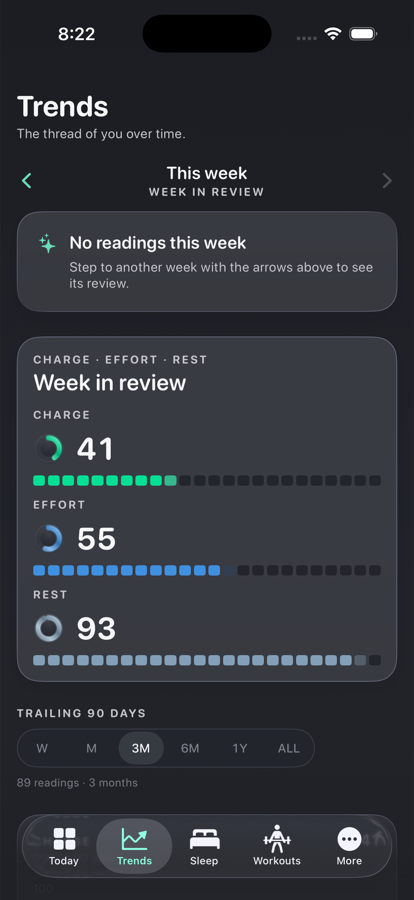
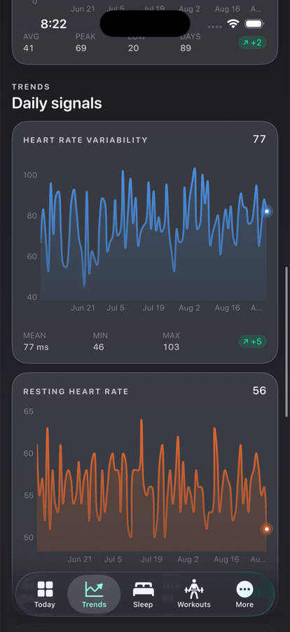
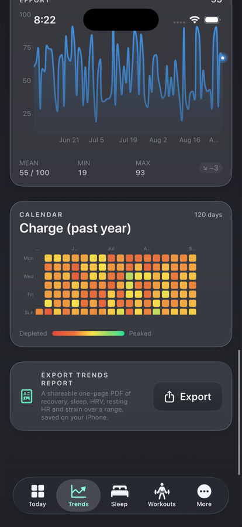
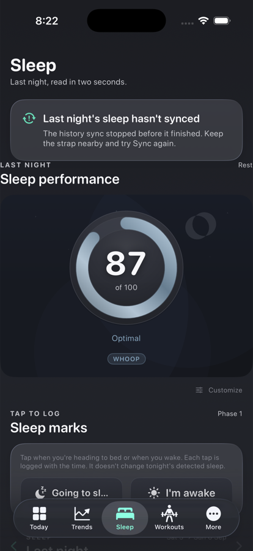
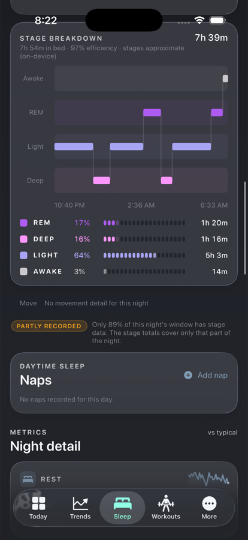
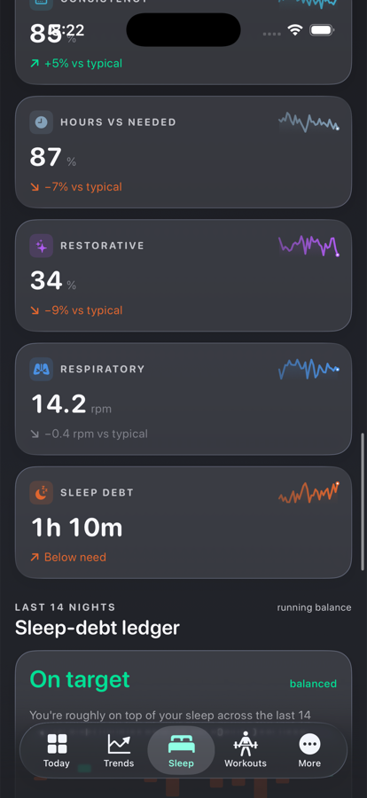
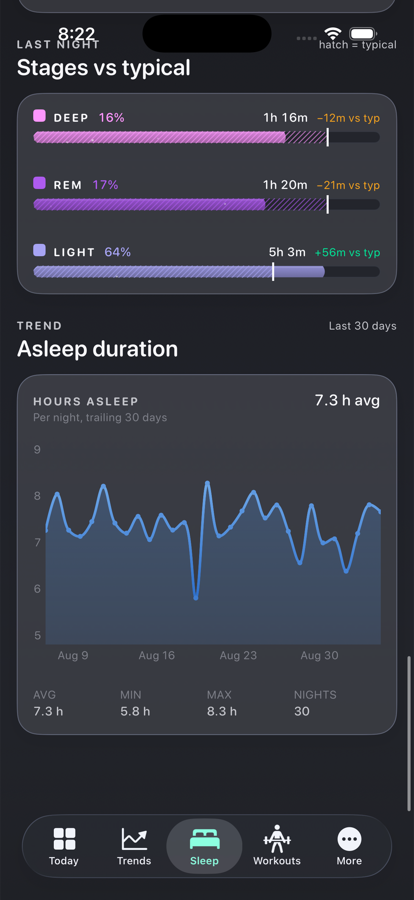

Three directions for each of the Trends and Sleep tabs. Same brief on both: the tab itself carries a lean amount of data (one screen, no scrolling through nine cards) and every row is a door into a deeper page. Same Liquid Glass material and drifting colour field as the Halo home page, so the three tabs read as one app. All numbers are test data for one wearer on Sunday 7 September.
Trends stacks a week digest, a range bar, four full-height charts, a year calendar and an export card: three screens tall. Sleep stacks a Rest gauge, sleep marks, the stage chart, naps, seven metric tiles, the debt ledger, stages vs typical and a 30-day trend: five screens tall. Both tabs show everything at once and nothing opens into anything.







One screen. The week digest becomes a three-row card: each score's weekly average, its delta against last week, and a pip per day. Below it, four signal rows carry a value, one signed delta against the 30-day baseline and a sparkline. The year calendar shrinks to a 16-week strip. Every row opens the metric page on the right: range control, one big chart with the baseline band, a readout strip, the two metrics it moves with, and a plain-English "what moves it".
The tab is a single hero chart with a chip row above it. Tapping a chip or one of the four tiles swaps what the hero shows, so the range control and the readout strip live on the tab and never move. The week digest and the calendar become plain link rows at the bottom. The chart itself is the door to the full metric page.
The tab opens with up to three generated findings, each a sentence with a sparkline: a signal that moved, how much, and since when. Tapping one opens the metric page with that window already selected. The week trio sits under it as small rings, and every metric is still reachable through a compact list at the bottom.
The hero is one slab: the Rest ring, hours asleep against need, bed and wake times, and the night compressed to a single-row hypnogram with its legend. Below it the seven metric tiles become six contributor rows in the Oura pattern: name, a bar, the value and one delta or verdict. The ledger, naps, marks and the 30-night trend become two link rows. Tapping the hero opens the stages page on the right, which is the current stage card, naps and the "why this is your main sleep" explainer, unchanged in data.
The running balance against need becomes the hero: one figure, a verdict, fourteen diverging bars. Last night is a compact card under it with the ring, the hours and a thin hypnogram; tapping it opens the full night. The six detail metrics become small tiles with a single delta each, and everything editable sits under Log.
Closest to today, condensed. Two numbers up top (Rest and hours against need), then the block hypnogram at full width with the four stage totals as chips, then three "vs typical" rows for Deep, REM and Light. The 30-night trend and the remaining four metrics collapse into two link rows.
Both picks follow the Halo rule already on the home page: one number and one signed delta per row, colour only ever beside a label, and every row a door.
Answers the two questions the tab exists for, in order: how was this week against last week, and which signal is off its baseline. Lens is better for studying one metric, but that is what the drill-down page is for; Story depends on finding rules that will be quiet most fortnights.
Cheapest to build of the three: the week digest, the four resolves, the year strip and the metric explorer all exist. Pulse rearranges them and adds a baseline delta per row.
Lens hides Effort and Rest behind a chip. Story needs a "nothing notable" state that is not an empty hero.
Leads with what people open the tab for, last night, and shows it in one slab instead of two heroes. The contributor list is the proven pattern (Oura, Bevel) for "lean, then dig": six rows, one figure each, and the sparkline and typical band waiting one tap in.
The ledger keeps its headline figure as a row, so the balance is still on the tab without owning it. The stages page is the current stage card, naps and explainer moved as-is, so nothing analytical is lost or re-derived.
Ledger leads with a 14-night sum on a morning when the question is last night. Stages spends the hero on the least trustworthy signal a WHOOP 4.0 produces.
What stays on the tab, what moves where. Every destination on the right already exists as a view or a card; the work is routing and a lighter row component.
| Today | On the tab (Pulse) | One tap in |
|---|---|---|
| Week in review card | Three rows: avg, delta vs last week, 7 pips | Week digest page with ‹ › and the full pip trio |
| Range bar | Gone. Fixed 30-day baseline on the tab | Metric page, W/M/3M/6M/1Y/ALL |
| Charge / HRV / RHR / Effort charts | Four signal rows: value, one delta, sparkline | Metric explorer (exists) with baseline band, readout, related metrics, "what moves it" |
| Charge calendar | 16-week strip | Full year heat map |
| Export report card | Nav icon | Report sheet (exists) |
| Today | On the tab (Night) | One tap in |
| Rest gauge hero + stage chart hero | One slab: ring, hours vs need, times, single-row hypnogram | Stages page: block hypnogram, stage chips with deltas, partly-recorded note, main-sleep explainer, naps, motion |
| Seven metric tiles with sparklines | Six contributor rows: bar, value, one delta or verdict | Per-contributor page: 30-night chart, typical band, what it means |
| Sleep-debt ledger card | The "Sleep debt" contributor row | Ledger page: 14 diverging bars and the running balance |
| Stages vs typical card | Folded into the stage chips' deltas | Stages page |
| Sleep marks, naps, wake editor | One "Log" row | Log page: marks, add nap, edit wake time |
| 30-day asleep trend | One row with avg and a sparkline | Duration page, same as the contributor |
← Home screen concepts · Halo build screenshots · Unlogged-activity flow